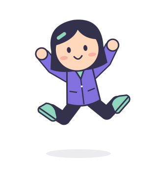
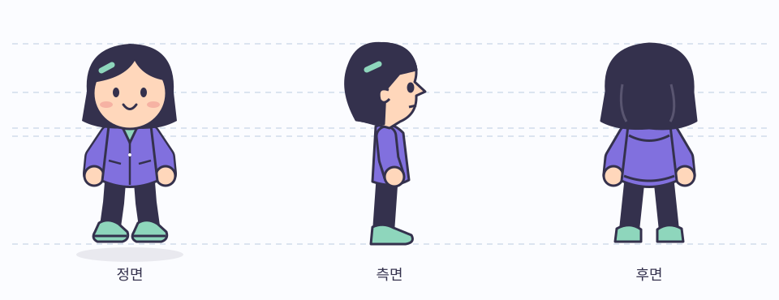

DESIGN LAB / CHARACTER DESIGN
특성화고 2학년50분 × 4차시태블릿 드로잉
나의 캐릭터에
움직임을 더하다.
작은 아이디어를 나만의 캐릭터로.
기본형과 세 방향의 모습을 만들고,
세 가지 동작으로 이야기를 전해 보세요.
실습 시작하기예시 먼저 살펴보기나만의 캐릭터가 시작되는 곳
같은 캐릭터, 새로운 움직임 ✦CHARACTER SKETCHBOOK루미의 기분 좋은 점프!2.5등신 · 4색 팔레트
TODAY'S MISSION
하나의 캐릭터.
세 방향, 다양한 움직임.
1차시기본형 1종
실루엣과 색으로
캐릭터의 개성 정하기
2–3차시캐릭터 3면도
정면·측면·후면을
같은 비례로 그리기
4차시응용동작 3종 이상
서로 다른 자세를 그리고
작품 시트를 PNG로 저장하기
LESSON 01 · 50 MIN
먼저, 나다운 캐릭터 만들기
복잡한 장식보다 기억에 남는 특징부터 정해 보세요.
LESSON 02–03 · 50 MIN × 2
돌려 보아도, 같은 캐릭터
정면·측면·후면을 나란히 그린 그림을 ‘3면도’라고 해요. 캐릭터가 정해졌다면 입체적인 모습을 설계해 보세요.
2차시 · 정면과 측면 · 50분
높이는 같게, 깊이는 새롭게
- 관찰 5분
갤러리의 3면도 예시 보기
예시에서 눈·턱·어깨·발바닥의 높이를 비교해요.
- 기준 잡기 10분
정한 캐릭터의 정면을 첫 칸에 그려요. 머리 꼭대기와 발바닥 사이에 눈·턱·어깨 기준선을 잡아요.
- 측면 스케치 25분
오른쪽을 보는 옆모습을 그려요. 코와 턱의 돌출, 뒤통수의 부피, 몸통의 두께를 표현해요. 반대편 눈과 팔은 가려질 수 있어요.
- 비교 10분
두 그림의 키와 머리 크기를 맞추고, PNG로 중간 저장해요.
3차시 · 후면과 완성 · 50분
보이지 않았던 뒤쪽 디자인
- 복습 5분
정면과 측면의 키, 옷 길이, 대표색을 확인해요.
- 후면 스케치 20분
뒤통수, 머리카락 끝, 옷의 뒷면과 신발 뒤축을 그려요. 얼굴 대신 뒷모습의 특징을 생각해요.
- 선과 색 정리 15분
세 방향의 머리 크기·어깨·옷 밑단을 맞추고 같은 팔레트로 완성해요.
- 공유와 저장 10분
친구에게 같은 캐릭터로 보이는지 물어보고 수정해요. 완성한 3면도를 PNG로 저장해요.
내 캐릭터 3면도 실습실
정면 · 측면 · 후면을 한 캔버스에서 비교하세요. 안내선은 그림과 분리되어 지우개로 지워지지 않아요.
루미 / 호기심 많은 탐험가둥근 단발 · 민트색 머리핀 · 보라색 재킷
예시 작품 · 루미의 캐릭터 3면도
둥근 단발, 민트색 머리핀, 보라색 재킷을 유지했어요. 점선은 방향이 바뀌어도 높이를 맞추는 기준입니다.

정면
얼굴과 몸의 중심, 양쪽 어깨의 균형을 잡아요.
측면
정면을 좁히는 대신 코·뒤통수·몸통의 깊이를 그려요.
후면
눈과 입은 보이지 않아요. 앞 지퍼를 뒤에도 그리지 않도록 주의해요.
표정 변화얼굴만 웃게 바꾸었다면?
감정은 달라졌지만 몸의 자세가 같으므로, 이번 실습의 별도 응용동작으로 세지 않아요.
😐같은 자세→😊같은 자세
응용동작몸으로 행동이 읽히게!
팔·다리의 방향, 몸통의 기울기, 무게중심을 바꾸세요. 얼굴을 가려도 행동을 알 수 있으면 좋아요.
인사하기 ↗ 달리기 → 점프하기 ↑
LESSON 04 · 50 MIN
세 가지 동작으로 생명 불어넣기
단순한 복사·회전으로 끝내지 말고, 몸의 구조를 새로 잡아 보세요.
FINISH & SHARE
마지막 점검, 그리고 작품 제출
기본형·응용동작 시트와 정면·측면·후면 3면도를 준비했나요?
스스로 확인해 보세요
전체 실습 진행률0 / 18
YOUR FINAL ARTWORK완성한 캐릭터 시트
한 장에 기본형 + 서로 다른 응용동작 3종 이상을 배치하고, 각 동작의 이름을 적어 주세요.
- 기본형·동작 시트·3면도 시트를 각각 PNG로 저장하기
- 권장 파일명: 학번_이름_캐릭터명.png
- 레이어가 남아 있는 원본은 별도 보관
체크리스트와 기획 메모의 저장 위치는 로그인·저장 안내를 확인하세요. 작품 제출은 별도로 진행하고 제출 완료 메시지를 확인하세요.